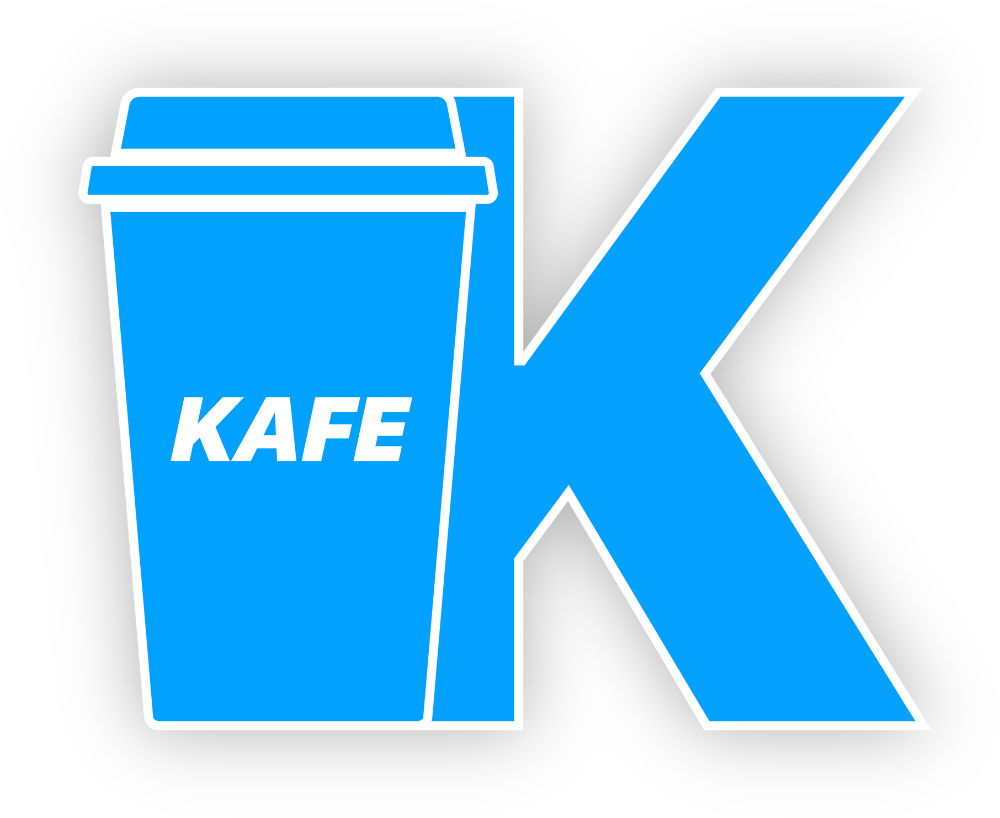
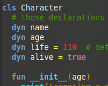

Home
Installing
Documentation
KEP

Kafe is a dynamic, strongly typed programming language running on a virtual machine, created to be used in video games.
Join us on
Discord
!
Features
Changelog
01-8-18: adding the basis of the Kafe compiler (integrating ANTLR4 from our fork)
25-7-18: the KVM supports arithmetic, jumps, comparisons, constants and symbols loading